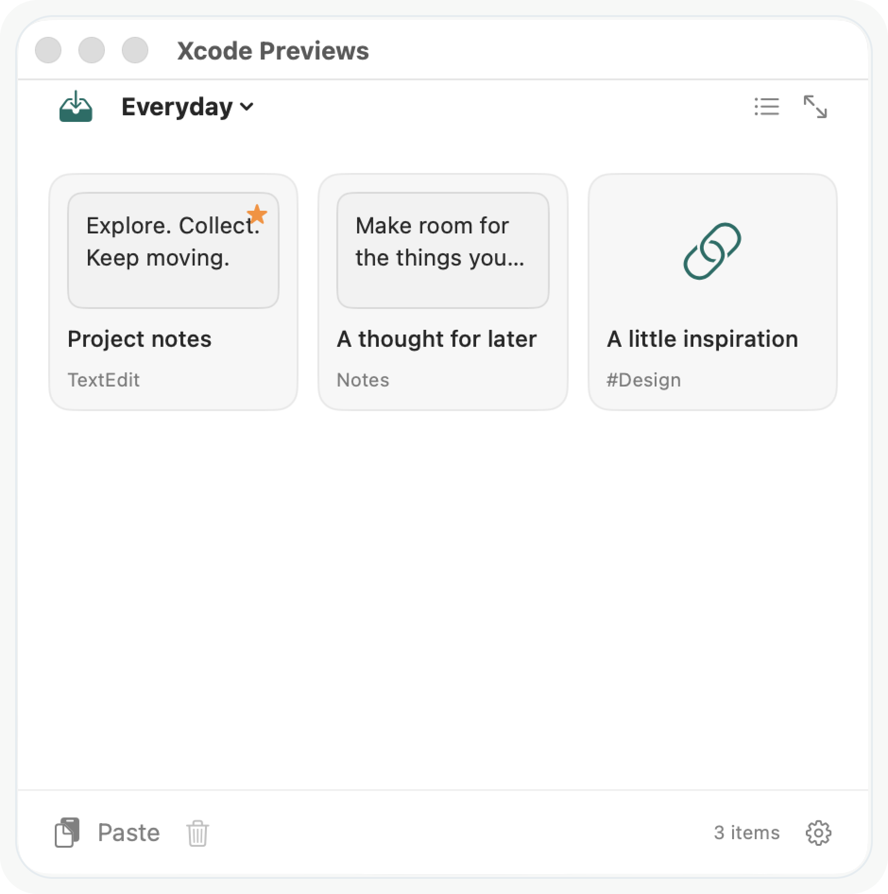

Gather now. Use when you’re ready.
Drag files, images, links, or text onto a shelf as you work. Bring items from different apps together so they’re ready for your next step.
Bring files, images, links, and text together in a shelf.
Drag them into the next app when you’re ready.

Press ⌘⌥G to bring GrabOn to your pointer. Keep a compact shelf nearby and reach your collected items without leaving what you’re doing.